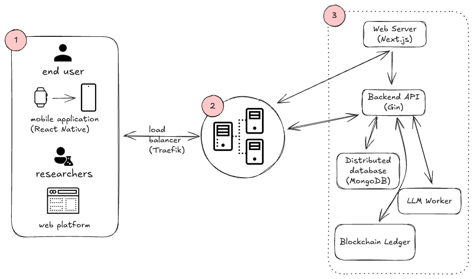

Major projects spanning collaborative IoT platforms, research contributions, and infrastructure automation. Each demonstrates integration of systems knowledge with practical engineering.
Master's Capstone Project: IoT Data Sharing Platform
PythonIoTEmbeddedOllamaSmartwatch

Illustration of the IoT data sharing platform
Architecture: full-stack IoT platform with smartwatch prototype and analytics integration.
Context
Master's capstone project as part of the final engineering program. Team of 5 students collaborated to design and implement a full-stack IoT data platform with connected device support.
Stakes & Challenge
Build a scalable, user-friendly IoT platform enabling collaborative data sharing between connected devices. Deliver a smartwatch prototype for real-world validation and support analytics-driven insights.
Missions & Contributions
Architected data flow from IoT sensors to the analysis layer. Designed and prototyped smartwatch firmware for sensor data capture. Coordinated full-stack implementation from embedded systems to cloud-facing services.
Results
Delivered a functional platform with smartwatch prototype and analytics integration. Produced project proposal, response documents, and comprehensive thesis on architecture and implementation. Platform supports real-time collaborative data analytics for IoT sensor networks.
Research and study project (Travail d'Étude et Recherche) conducted at University of Strasbourg.
Stakes & Challenge
Survey and analyze scheduling algorithms and compiler-level optimizations for real-time systems. Understand trade-offs between predictability, performance, and resource efficiency in time-critical applications.
Missions & Contributions
Conducted comprehensive literature survey on real-time scheduling techniques. Analyzed compilation optimization strategies specific to real-time constraints. Synthesized findings and identified research gaps and future directions.
Results
Completed thesis documenting scheduling paradigms (fixed-priority, dynamic, multi-core), compilation-aware optimizations, and practical applications. Research contributes to understanding how to optimize systems for predictable, deterministic behavior—critical for aerospace, automotive, and industrial systems.